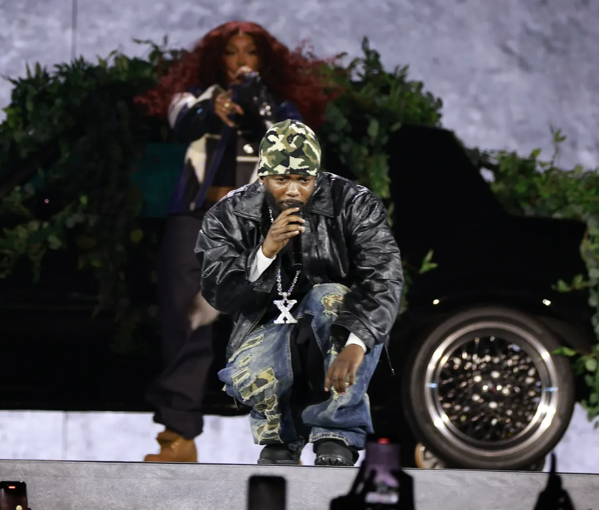

Latest Music News
Stay updated with the hottest stories, new releases, and trending topics in the music world!

Eurovision 2025: Semi-Final Line-Up Announced
The European Broadcasting Union (EBU) has unveiled the running order for the Eurovision Song Contest 2025 semi-finals, set to take place in Basel, Switzerland. The first semi-final is scheduled for Tuesday, May 13, and the second for Thursday, May 15. Notable entries include Iceland's VÆB with "RÓA", Poland's Justyna Steczkowska performing "GAJA", and Estonia's Tommy Cash with "Espresso Macchiato". The Grand Final will be held on May 17, 2025.

Kendrick Lamar & SZA Kick Off Grand National Tour
On April 19, Kendrick Lamar and SZA launched their highly anticipated Grand National Tour at U.S. Bank Stadium in Minneapolis. The opening night featured a 52-song setlist, including collaborations like "Luther", "Doves in the Wind", and "All the Stars". SZA narrowly avoided an onstage mishap during "Diamond Boy (DTM)" but recovered gracefully. The tour marks the first stadium tour for both artists and will continue across North America and Europe through August.

Wu-Tang Clan Releases 'Black Samson, The Bastard Swordsman
Wu-Tang Clan, in collaboration with producer Mathematics, released their new album "Black Samson, The Bastard Swordsman" on April 12 as a Record Store Day exclusive. This marks their first full-length release since 2017's "The Saga Continues". The album was issued as a limited edition double LP, with only 5,000 copies available, featuring unique cover art and colored vinyl.

Beck Performs with BBC Concert Orchestra at Royal Albert Hall
Beck returned to London's Royal Albert Hall for two special performances on April 19-20, accompanied by the BBC Concert Orchestra. The concerts featured orchestral arrangements of songs from his albums "Morning Phase", "Sea Change", and "Mutations". Highlights included renditions of "Blue Moon", "Paper Tiger", and "Tropicalia". Beck also surprised the audience with covers and impromptu performances, showcasing his versatility and showmanship.

April 2025 New Music Releases
April has seen a slew of new music releases. Neil Young's live album "Coastal" captures performances from his recent tour, blending classics with newer material. Elton John has released "The Lockdown Sessions II", featuring collaborations with various artists. Other notable releases include albums from Ghost, Billy Idol, and L.A. Guns. Record Store Day also brought exclusive vinyl editions, delighting collectors worldwide.